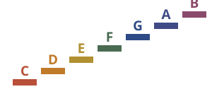

An ear-training app for five to eight year olds. Pitch is height, so the room is built that way: a staircase of letters climbs a night sky from low C to high C, and every letter sings its true note in a real piano recording. Nine games, no score, no timer and no wrong answers.
Support and contact for the iPhone app
The letters are the characters. Tap one and it sings its note and says so. Behind the curtain at the top of the stairs lives the mystery singer, who plays a note and waits to be found — and hunting for it by tapping other letters is the game, because that comparison is the thing that trains an ear.
Two games listen instead. In Sing together the child's own voice becomes a star riding the staircase in real time, with no rounds and no goals at all. In Sing it back the mystery singer plays a note and she sings it back.
Every note is a real piano, not a synthesized tone: the Salamander Grand Piano by Alexander Holm, a sampled Yamaha C5 used under the CC BY 3.0 license, at standard tuning, A = 440 Hz, across three octaves. The violin, flute and harp come from VSCO-2 Community Edition, which is public domain. All of it is bundled in the app, so everything works with no connection at all.
No accounts, no sign-in, no advertising, no analytics, no in-app purchases, no links out of the app and no network connection of any kind. It collects nothing. The full statement is on the privacy page.
Write to josh.greenman@gmail.com. Say which iPhone and which iOS version, and which game the trouble is in. Every message is read by the person who wrote the app.
Sing together and Sing it back need the microphone. Check Settings, then Singing Stairs, and make sure Microphone is on. Both games work best a foot or two from the phone, in a room without a television going.
Press and hold the Grown-ups button in the bottom right for about a second. That is where sharps and flats turn on, letter names switch to solfege, individual letters can be put to sleep to make the games smaller for a younger player, and everything can be started over.
Low, middle and high sit on the pick-a-game screen, with a stair glyph and an audible preview, because the right octave is the one that matches the child's own voice. The listening games judge the letter, not the octave: singing the right letter in any voice counts.
iPhone, iOS 17 or later. Works fully offline. Nothing to set up.
This app was built with AI assistance. The piano and orchestral samples are licensed as described above; the songbook is public domain by rule.
Singing Stairs · Josh Greenman · josh.greenman@gmail.com · Privacy policy